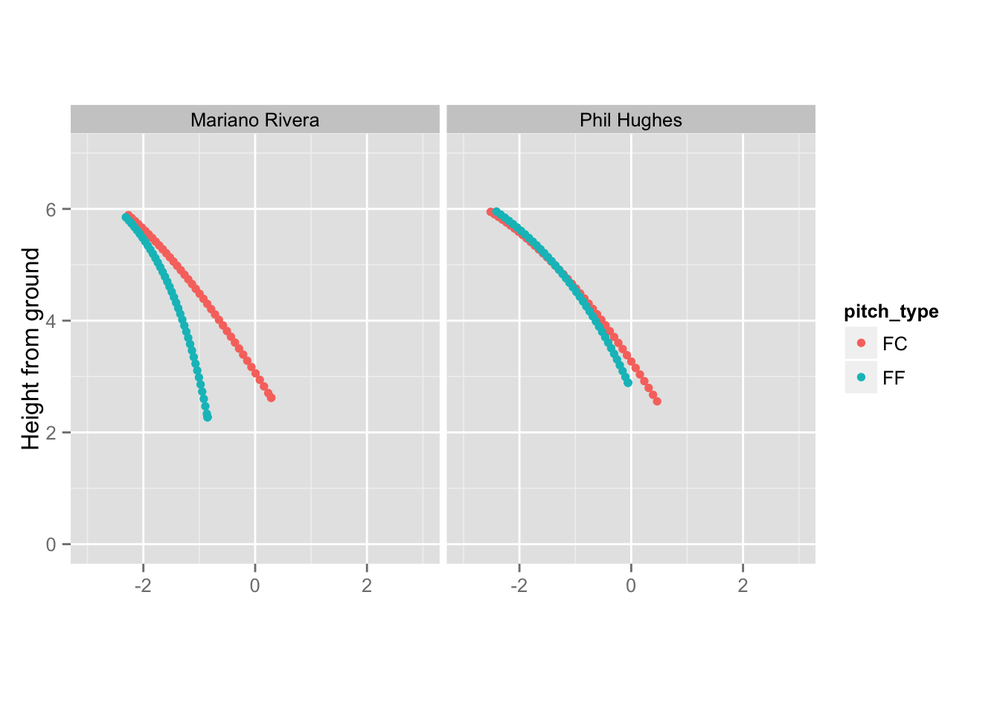

NOTE: Ironically, some plots below may not render by default if you use Google Chrome, so please use Firefox or Safari. If you insist on Chrome, please close all Chrome instances and then restart Chrome using the flag –allow-file-access-from-files. In Windows, you do this using cmd, the command prompt.
This post demonstrates some new features of the R package animint (facets, fixed cartesian coordinates, & knitr integration) using PITCHf/x data. animint translates ggplot2’s grammar of graphics implementation to SVG and adds aesthetics/options to enable interactive animations.
The R package pitchRx provides some utilities for collecting and manipulating PITCHf/x data. pitchRx comes prepackaged with every four-seam and cutting fastball from Mariano Rivera and Phil Hughes over the 2011 season (but you can collect whatever you want with pitchRx::scrape). pitchRx also provides a function getSnapshots that returns the spatial location of each pitch over a sequence of time points (in a 3D array). In this gist, I provide a function – getLocations – that will getSnapshots, but return a data.frame (which is more convenient for plotting). t can also match an arbitrary number of ‘co-variates’ with those snapshots, and (optionally) average PITCHf/x parameters over those co-variates.
# This gist requires dplyr, tidyr, & pitchRx; and will install any that are not installed already
devtools::source_gist(id = "da555f08f3c9ba2c0b8e")
data(pitches, package = "pitchRx")
dat <- getLocations(pitches, pitcher_name, pitch_type, summarise = TRUE)
head(dat)## pitcher_name pitch_type frame x y z
## 1 Mariano Rivera FC 1 -2.267 50.00 5.888
## 2 Mariano Rivera FC 2 -2.208 48.66 5.836
## 3 Mariano Rivera FC 3 -2.148 47.33 5.781
## 4 Mariano Rivera FC 4 -2.088 45.99 5.725
## 5 Mariano Rivera FC 5 -2.027 44.66 5.666
## 6 Mariano Rivera FC 6 -1.966 43.33 5.606The frame co-variate keeps track of time since the pitcher released the ball (in thousands of a second). Notice that as frame becomes larger, the distance from home plate (y) becomes smaller.
By plotting height from the ground (z) and the horizontal location relative to home plate (x) for each frame and stitching those plots into an animation, we acheive the effect of a pitcher throwing the baseball at the viewer. We could acheive this by subsetting dat and printing a scatterplot of the x/z coordinates for each value of frame (which is effectively what pitchRx::animateFX does). Or, we can leverage animint‘s showSelected aesthetic and map it to the frame variable. This essentially says: ’only show the data corresponding to the currently selected value of frame’.
library(animint)
p <- ggplot() +
geom_point(aes(x = x, y = z, color = pitch_type,
showSelected = frame), data = dat) +
facet_grid(. ~ pitcher_name) + ylim(0, 7) + xlim(-3, 3) +
coord_equal() + xlab("") + ylab("Height from ground") If we print this plot, it will actually print a “snapshot” for each value of frame.
p
To convert this plot into an SVG-based animation, we’ll group a few animint specific options and the plot itself into a list.
# defines the plot to convert & specifies its width (in pixels)
plist <- list(strikezone = p + theme_animint(width = 800),
# 'animate' over the frame variable
time = list(variable = "frame", ms = 100),
# use smooth transitions
duration = list(frame = 250))If you’re using an interactive environment, you can now enter animint2dir(plist) or animint2gist(plist) to view/share this plot. However, when using knitr and R Markdown to create an HTML page (such as this one), just attach a class of ‘animint’ to your list and knitr will know how to embed the plot.
structure(plist, class = "animint")By combining the concept of showSelected with a clickSelects aesthetic, one can create interaction plots with components that reflect the popular visualization mantra: “Overview first, zoom and filter, then details on demand”.
To demonstrate the idea of an overview with a zoom & filter, let’s consider a static plot of locations of pitches when they cross home plate (aka a strike-zone plot) and use the showSelected aesthetic to filter by the date.
# reusable function with outline for a faceted strike-zone plot
ggstrike <- function() {
ggplot() + facet_grid(pitcher_name ~ stand) +
ylim(0, 7) + xlim(-3, 3) + coord_equal() + xlab("") +
ylab("")
}
# overview (not filtered by anything)
strike <- ggstrike() + theme(legend.position = "none") +
geom_point(data = pitches,
aes(x = px, y = pz, color = pitch_type))
# filter by date
strike_date <- ggstrike() + geom_point(data = pitches,
aes(x = px, y = pz, color = pitch_type,
showSelected = date))Another plot is required to select dates via a mouseclick. Here we create a time series of the number of pitches thrown (by pitch_type and pitcher_name) and add transparent vertical bars that one may click on to select different dates:
# track the number of pitches per game (for each pitcher-type combination)
n_pitches <- pitches %>%
group_by(pitch_type, pitcher_name, date) %>%
summarise(count = n()) %>%
mutate(group = paste(pitcher_name, pitch_type, sep = ": ")) %>%
mutate(dated = as.Date(date, format = "%Y_%m_%d")) %>%
data.frame %>% mutate(max_n = max(count))
# time series plot with clickSelects
series <- ggplot() +
geom_line(aes(x = dated, y = count, colour = pitch_type,
linetype = pitcher_name, group = group), data = n_pitches) +
stat_identity(aes(x = dated, y = max_n, clickSelects = date, alpha = 0.2),
geom = "bar", data = n_pitches) + scale_alpha(guide = 'none') +
xlab("") + ylab("Number of pitches") + theme_animint(width = 800, height = 200)
plist2 <- list(strike = strike,
strikeDate = strike_date,
series = series)
structure(plist2, class = "animint")Let’s combine ideas from the previous two visualizations to create an interactive animination. In the very first visualization, we “summarized” the pitch trajectories over each unique combination of pitcher and pitch type. Now, we take a more granular approach and use filtering to examine the flight of individual pitches. We also add some “details on demand” in the form of a text label giving us the speed of the currently selected pitch.
locs2 <- getLocations(pitches, pitcher_name, pitch_type, date, end_speed, summarise = FALSE) %>%
mutate(end_speed = paste0("End Speed: ", end_speed, " MPH"))
# Notice a pitch_id co-variate is included automatically to identify which pitch is which
head(locs2)## pitcher_name pitch_type date end_speed pitch_id frame
## 1 Mariano Rivera FC 2011_03_31 End Speed: 82.4 MPH 1 1
## 2 Mariano Rivera FC 2011_03_31 End Speed: 82.3 MPH 2 1
## 3 Mariano Rivera FC 2011_03_31 End Speed: 83.1 MPH 3 1
## 4 Mariano Rivera FC 2011_03_31 End Speed: 83.6 MPH 4 1
## 5 Mariano Rivera FC 2011_03_31 End Speed: 84.3 MPH 5 1
## 6 Mariano Rivera FC 2011_03_31 End Speed: 83.6 MPH 6 1
## x y z
## 1 -2.192 50 6.025
## 2 -2.206 50 5.892
## 3 -2.326 50 5.822
## 4 -2.164 50 5.816
## 5 -2.330 50 5.871
## 6 -2.047 50 5.959pitches$pitch_id <- seq_len(dim(pitches)[1])
strike2 <- ggstrike() + theme(legend.position = "none") +
geom_point(data = pitches, aes(x = px, y = pz, color = pitch_type,
showSelected = date, clickSelects = pitch_id))
ani <- ggplot() +
geom_point(aes(x = x, y = z, color = pitch_type,
showSelected = pitch_id, showSelected2 = frame),
data = locs2) +
geom_text(aes(x = 0, y = 7, label = end_speed,
showSelected = pitch_id, showSelected2 = frame),
data = locs2) +
ylim(0, 7) + xlim(-3, 3) + coord_equal() + xlab("") +
ylab("Height from ground")
plist3 <- list(strike2 = strike2,
ani = ani,
series = series,
time = list(variable = "frame", ms = 100),
duration = list(frame = 250))
structure(plist3, class = "animint")